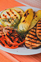
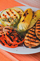

Juusto-vihanneskeittoa ja kokin sämpylä Paistettua lohta, sinappikastiketta, tilliperunoita ja kasviksia Marjakiisseliä ja hunajakermavaahtoa
Kana-fetajustosalaattia ja kokin sämpylä Paistettua punakampelaa, pinaattikastiketta ja perunamuusia Pannukakkua, mansikkahilloa ja kermavaahtoa
Tomaatti-yrttikeittoa ja kokin sämpylä Kalkkunaleikettä, BBQ-kastiketta, riisiä ja kasviksia Omenapiirakkaa ja vaniljakastiketta
Rapukeittoa ja kokin sämpylä Poronkäristystä, perunamuusia, puolukkahilloa ja suolakurkkuja Hedelmäsalaattia ja kinuskikastiketta
Savulohisalaatti ja kokin sämpylä Naudan paahtopaistia, punaviinikastiketta, kermaperunat ja kasviksia Suklaamousse
Lounaan hinta (11 euroa, sisältää ruokajuoman - vesi, kotikalja, maito)
| ma | ti | ke | to | pe | la |
|---|---|---|---|---|---|
| 10:30 - 15:00 | 10:30 - 15:00 | 10:30 - 15:00 | 10:30 - 15:00 | 10:30 - 15:00 17:00 - 21:00 |
11:00 - 15:00 17:00 - 21:00 |